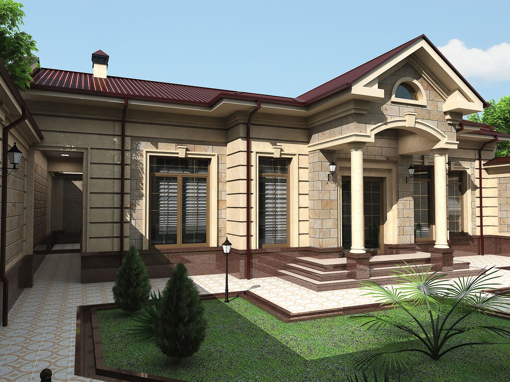

Eksteryer dizayn — bu binolar va boshqa obyektlarning tashqi
ko'rinishini loyihalash jarayoni. U nafaqat estetik jihatlarni, balki
funksionallikni ham hisobga oladi. Eksteryer dizaynning asosiy jihatlari
quyidagilardan iborat: 1. **Arxitektura uslubi**: Binoning umumiy
ko'rinishi va uslubi (klassik, zamonaviy, industrial, skandinav va
boshqalar) eksteryer dizaynida muhim rol o'ynaydi. 2. **Materiallar**:
Tashqi qoplamalar uchun materiallarni tanlash (tosh, yog'och, metall,
shisha va boshqalar) binoning mustahkamligi va estetik ko'rinishi uchun
zarur. 3. **Ranglar**: Binoning tashqi ranglari muhitga mos kelishi va
atrofdagi tabiat bilan uyg'unlashishi kerak. 4. **Landshaft dizayni**:
Eksteryer dizaynda bog'lar, yo'llar, suv havzalari va boshqa tabiiy
elementlar ham muhimdir. Ular binoning tashqi ko'rinishini to'ldiradi va
makonning umumiy atmosferasini yaratadi. 5. **Yorug'lik**: Tashqi
yorug'lik manbalari (fanalari, lampalar) binoning ko'rinishini va
xavfsizligini ta'minlaydi. 6. **Funktsionallik**: Eksteryer dizaynida
joylashuv, kirish joylari, parkovka va boshqa amaliy jihatlar hisobga
olinadi. Eksteryer dizayn jarayoni quyidagi bosqichlarni o'z ichiga
oladi: 1. **Tadqiqot**: Mijozning ehtiyojlarini aniqlash va joylashuvni
o'rganish. 2. **Konsepsiya ishlab chiqish**: Dastlabki g'oyalar va mood
board yaratish. 3. **Rejalashtirish**: Tashqi ko'rinish rejasini
tayyorlash. 4. **Materiallar va ranglar tanlash**: Tashqi qoplamalar va
ranglarni tanlash. 5. **Amalga oshirish**: Dizaynni amalga oshirish va
nazorat qilish. Eksteryer dizayn nafaqat binoning tashqi ko'rinishini
yaxshilaydi, balki uning atrofidagi muhitga ham ijobiy ta'sir
ko'rsatadi. Bu soha insonlarning hayot sifatini oshirishda muhim
ahamiyatga ega.